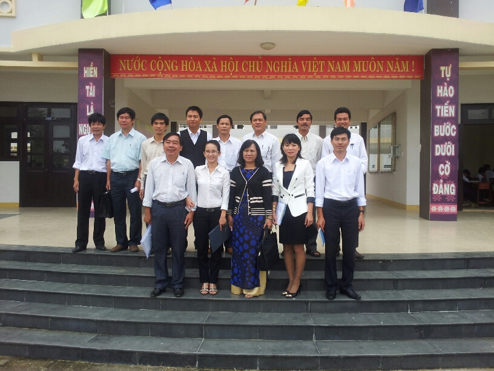
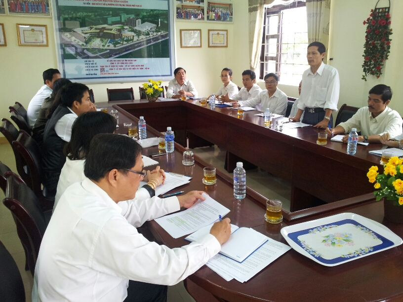
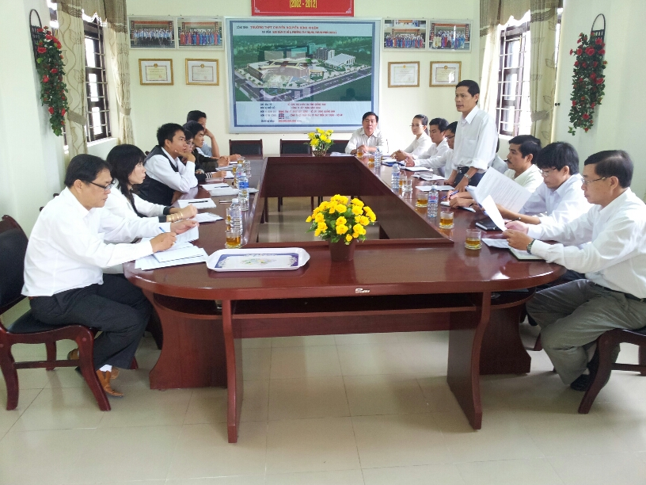
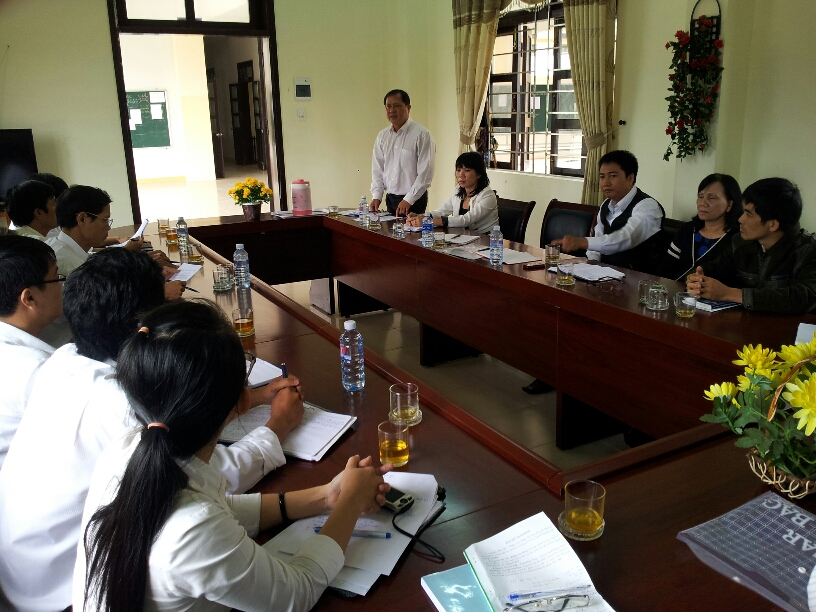
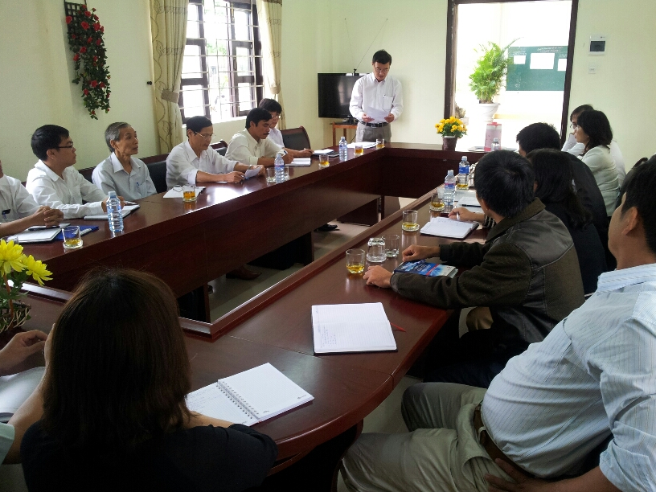

Trung tâm Phát triển nguồn nhân lực CLC làm việc với trường chuyên

Lần cập nhật cuối lúc Thứ tư, 05 Tháng 12 2012 07:06 Viết bởi Administrator Thứ tư, 05 Tháng 12 2012 06:25

Trung tâm Phát triển nguồn nhân lực chất lượng cao tỉnh Quảng Nam làm việc với trường THPT chuyên Nguyễn Bỉnh Khiêm
Trung tâm Phát triển nguồn nhân lực chất lượng cao tỉnh Quảng Nam là đơn vị sự nghiệp công lập trực thuộc UBND tỉnh, có nhiệm vụ giúp UBND tỉnh xây dựng quy hoạch, kế hoạch, các đề án và tổ chức triển khai thực hiện công tác đào tạo cán bộ, công chức; tạo nguồn cán bộ, công chức có trình độ, năng lực cho tỉnh. Trung tâm sẽ là đầu mối thực hiện công tác đào tạo cán bộ, công chức có trình độ sau đại học ở nước ngoài; đào tạo nguồn cán bộ có trình độ đại học, sau đại học ở trong và ngoài nước đối với học sinh tốt nghiệp THPT loại giỏi, sinh viên tốt nghiệp loại xuất sắc. Ngoài ra, trung tâm còn có nhiệm vụ thu hút người có trình độ sau đại học (bao gồm người có học hàm giáo sư, phó giáo sư; học vị tiến sĩ, thạc sĩ; trình độ dược sĩ, bác sĩ chuyên khoa I, chuyên khoa II, bác sĩ nội trú...) về công tác tại tỉnh; phối hợp với cơ sở đào tạo trong và ngoài nước tổ chức các khóa bồi dưỡng kiến thức, kỹ năng cho cán bộ, công chức, viên chức giữ chức vụ lãnh đạo, quản lý cấp huyện, tỉnh.
Sáng ngày 4/12/2012 Trung tâm đã đến làm việc với Trường THPT chuyên Nguyễn Bỉnh Khiêm. Đi trong đoàn có Ông Huỳnh Đức Dũng, Phó Giám đốc Trung tâm làm Trưởng đoàn cùng các cán bộ, chuyên viên thuộc các phòng ban của Trung tâm.
Về phía nhà trường có Thầy Nguyễn Đình Tiến - Hiệu trưởng cùng các Thầy Cô trong Ban Giám hiệu; các Thầy, Cô tổ trưởng chuyên môn, đại diện Công đoàn, Đoàn thanh niên nhà trường. Tại buổi làm việc nhà trường đã nghe báo cáo về mục tiêu, chiến lược của trung tâm. Các Thầy, Cô cùng thảo luận, trao đổi ý kiến và Đ/c Huỳnh Đức Dũng cũng đã trao đổi và giải trình một số ý kiến mà các thầy cô trong trường đã phát biểu.
Thầy Nguyễn Đình Tiến cũng đã phát biểu rằng Trường chuyên Nguyễn Bỉnh Khiêm chính là nơi để tạo nguồn cho Trung tâm và Trung tâm Phát triển nguồn nhân lực chất lượng cao tỉnh Quảng Nam chính là cơ hội, tạo điều kiện cho các em học sinh trường chuyên Nguyễn Bỉnh Khiêm có điều kiện tiếp tục được học tập trong môi trường chất lượng cao để sau này sẽ về công tác và phục vụ lâu dài cho tỉnh Quảng Nam theo đề án thu hút nhân tài của chương trình phát triển nguồn nhân lực chất lượng cao của tỉnh.
Một số hình ảnh liên quan:




- 21/02/2013 10:06 - TRƯỜNG THPT CHUYÊN NGUYỄN BỈNH KHIÊM TỔ CHỨC HỘI T…
- 29/01/2013 07:53 - Giấy mời Hội trại Mừng Đảng, Đón Xuân
- 12/12/2012 23:14 - TRƯỜNG THPT CHUYÊN NGUYỄN BỈNH KHIÊM TỔ CHỨC SINH …
- 07/12/2012 16:31 - HOẠT ĐỘNG CỦA CÂU LẠC BỘ TIẾNG ANH-
- 05/12/2012 21:59 - Giới thiệu Luật Công đoàn sửa đổi 2012
- 05/12/2012 06:17 - Tin an toàn giao thông
- 12/11/2012 08:30 - Kết quả xếp giải thi HSG lớp 12
- 10/11/2012 08:29 - Kết quả thi HSG 12 năm học 2012-2013
- 08/10/2012 10:36 - Hội nghị nhà giáo - lao động năm học 2012 - 2013 v…
- 05/10/2012 17:08 - Bí thư tỉnh ủy Nguyễn Đức Hải dự lễ kỷ niệm 10 năm…